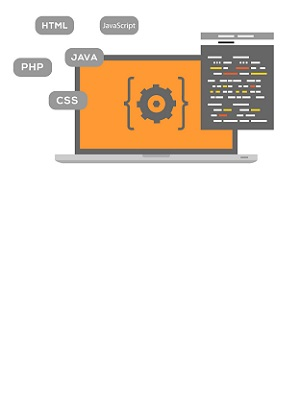

Semana 1: Tecnologías de Desarrollo Web
Definiciones
Las tecnologías de desarrollo web se refieren a un conjunto de herramientas, lenguajes de programación, frameworks y estándares utilizados para crear aplicaciones y sitios web en Internet.
Estas tecnologías permiten la creación, el diseño y la interacción con contenido en línea. Algunos de los elementos clave de las tecnologías web incluyen:
- Lenguajes de Marcado: Como HTML (Hypertext Markup Language) para la estructura básica de las páginas web, CSS (Cascading Style Sheets) para el diseño y presentación, y XML (eXtensible Markup Language) para la representación de datos.
- Lenguajes de Programación del Lado del Cliente: Principalmente JavaScript, que se ejecuta en el navegador del usuario y permite la interactividad y dinamismo en las páginas web.
- Bases de Datos: Sistemas de gestión de bases de datos (por ejemplo, MySQL, PostgreSQL) que almacenan y recuperan datos para las aplicaciones web.
- Servidores Web: Software que gestiona las solicitudes y respuestas entre los navegadores y los servidores donde se alojan las aplicaciones web.
- APIs (Interfaces de Programación de Aplicaciones): Permiten la integración y comunicación entre diferentes aplicaciones y servicios web.
Procedimientos
El procedimiento para utilizar tecnologías web puede variar según el tipo de proyecto o aplicación que se esté desarrollando.
Algunos componentes de las tecnologías de desarrollo web se dividen en:
- Configuración del Entorno de Desarrollo: Instala un entorno de desarrollo que incluya un editor de código, un navegador web y herramientas de desarrollo (por ejemplo, Visual Studio Code, Google Chrome, etc.).
- Lado del Cliente Frontend: Cuya principal programación es HTML, CSS y JavaScript.
- Lado del Cliente Backend: Servidores web y lenguajes de programación como PHP, Java, Python, entre otros.
- Pruebas: Realizar pruebas unitarias y de integración para asegurarse de que cada componente funcione como se espera.
- Despliegue: Configurar el entorno de producción y asegurarse de que la aplicación esté accesible en línea.
Resultados
Se adquirió una experiencia práctica en lenguajes de programación web como HTML, CSS y JavaScript.
Comprender los principios de diseño UX para mejorar la experiencia del usuario.
Aprender a planificar y gestionar proyectos web desde la concepción hasta el despliegue.
Por último, se aprendió a diferenciar las diferentes tecnologías web que permiten a los desarrolladores crear aplicaciones web efectivas y funcionales, desde la estructura y el diseño hasta la funcionalidad y la gestión de datos.
